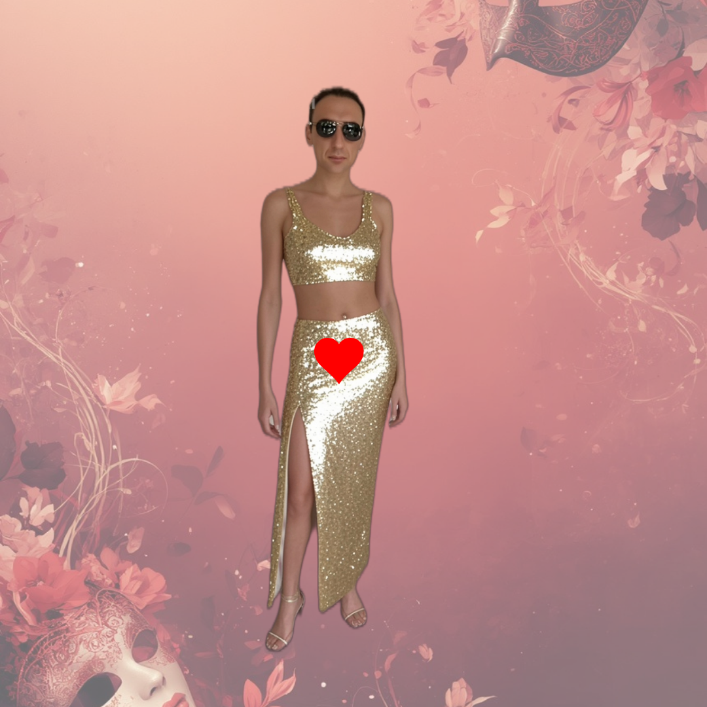

Biga najavio maškare u terminu koji nitko nije očekivao
Izdvojeno
Predsjednik udruge Mladeži Biga pokušava vratiti karneval na velika vrata, ali selo ima večere, rezervacije i drukčiji kalendar.
Otvori članakSatirični list mjesta
Karnevalska satira
Rubrika okuplja dvije naslovne priče: Bigin karnevalski kalendar koji zbunjuje selo i novu karnevalsku misiju da Krnjo napokon bude veći od mačke.

Izdvojeno
Predsjednik udruge Mladeži Biga pokušava vratiti karneval na velika vrata, ali selo ima večere, rezervacije i drukčiji kalendar.
Otvori članakKarnevalska satira
Nakon prošlogodišnje karnevalske figure koja je otvorila pitanje je li riječ o Krnji ili kućnom ljubimcu, organizatori najavljuju ozbiljan rast.
Otvori članak